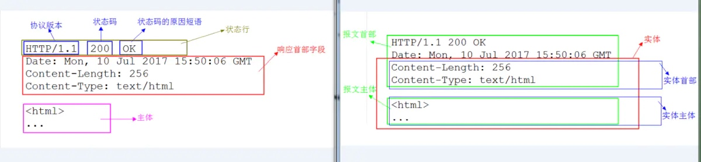
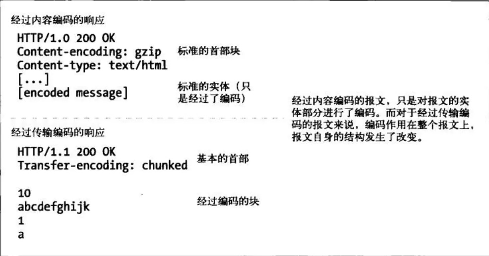
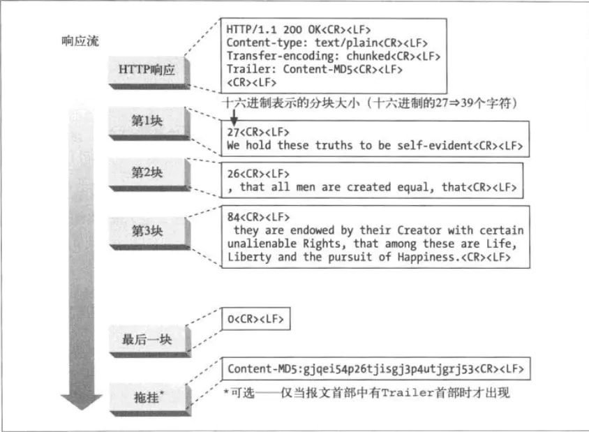
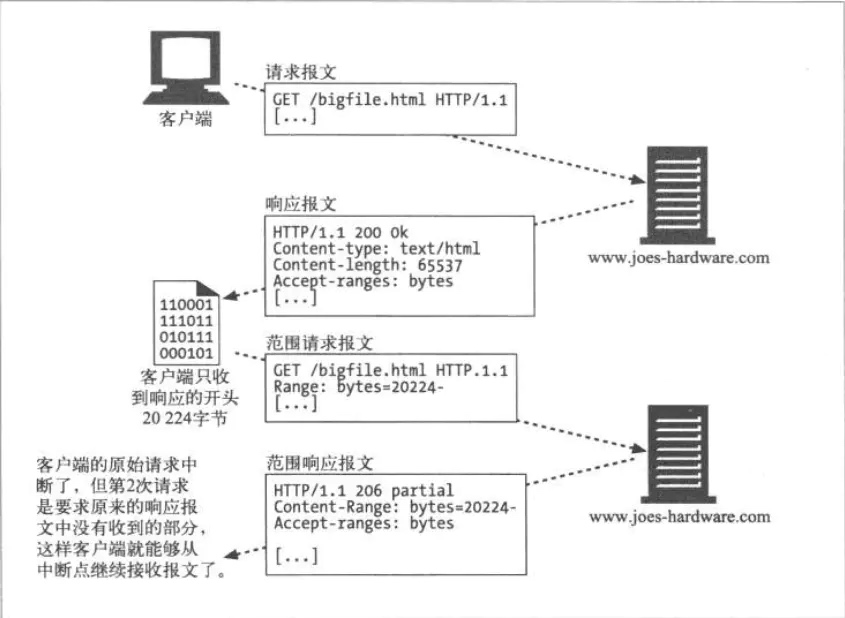

1. HTTP 报文实体概述
HTTP 报文结构
大家请仔细看看上面示例中，各个组成部分对应的内容。
接着，我们来看看报文和实体的概念。如果把 HTTP 报文想象成因特网货运系统中的箱子，那么 HTTP 实体就是报文中实际的货物。
我们可以看到，上面示例右图中深红色框的内容就是报文的实体部分，而蓝色框的两部分内容分别就是实体首部和实体主体。而左图中粉红框内容就是报文主体。
通常，报文主体等于实体主体。只有当传输中进行编码操作时，实体主体的内容发生变化，才导致它和报文主体产生差异。
2. 内容编码
HTTP 应用程序有时在发送之前需要对内容进行编码。例如，在把很大的 HTML 文档发送给通过慢速连接上来的客户端之前，服务器可能会对其进行压缩，这样有助于减少传输实体的时间。服务器还可以把内容搅乱或加密，以此来防止未授权的第三方看到文档的内容。
这种类型的编码是在发送方应用到内容之上的。当内容经过内容编码后，编好码的数据就放在实体主体中，像往常一样发送给接收方。
内容编码类型：
| 编码方式 |
描述 |
| gzip |
表明实体采用 GNU zip 编码 |
| compress |
表明实体采用 Unix 的文件压缩程序 |
| deflate |
表明实体采用 zlib 的格式压缩的 |
| identity |
表明没有对实体进行编码，当没有 Content-Encoding 首部字段时，默认采用此编码方式 |
3. 传输编码
内容编码是对报文的主体进行的可逆变换，是和内容的具体格式细节紧密相关的。
传输编码也是作用在实体主体上的可逆变换，但使用它们是由于架构方面的原因，同内容的格式无关。使用传输编码是为了改变报文中的数据在网络上传输的方式。
内容编码和传输编码的对比
4. 分块编码
分块编码把报文分割成若干已知大小的块。块之间是紧挨着发送的，这样就不需要在发送之前知道整个报文的大小了。分块编码是一种传输编码，是报文的属性。
分块编码与持久连接
若客户端与服务器端之间不是持久连接，客户端就不需要知道它在读取的主体的长度，而只需要读取到服务器关闭主体连接为止。
当使用持久连接时，在服务器写主体之前，必须知道它的大小并在 Content-Length 首部中发送。如果服务器动态创建内容，就可能在发送之前无法知道主体的长度。
分块编码为这种困难提供了解决方案，只要允许服务器把主体分块发送，说明每块的大小就可以了。因为主体是动态创建的，服务器可以缓冲它的一部分，发送其大小和相应的块，然后在主体发送完之前重复这个过程。服务器可以用大小为 0 的块作为主体结束的信号，这样就可以继续保持连接，为下一个响应做准备。
来看看一个分块编码的报文示例：

分块编码的报文
5.多部分媒体类型
MIME 中的 multipart（多部分）电子邮件报文中包含多个报文，它们合在一起作为单一的复杂报文发送。每一部分都是独立的，有各自的描述其内容的集，不同部分之间用分界字符串连接在一起。
相应得，HTTP 协议中也采纳了多部分对象集合，发送的一份报文主体内可包含多种类型实体。
多部分对象集合包含的对象如下：
multipart/form-data：在 Web 表单文件上传时使用。
multipart/byteranges：状态码 206 Partial Content 响应报文包含了多个范围的内容时使用。
6. 范围请求
假设你正在下载一个很大的文件，已经下了四分之三，忽然网络中断了，那下载就必须重头再来一遍。为了解决这个问题，需要一种可恢复的机制，即能从之前下载中断处恢复下载。要实现该功能，这就要用到范围请求。
有了范围请求， HTTP 客户端可以通过请求曾获取失败的实体的一个范围（或者说一部分），来恢复下载该实体。当然这有一个前提，那就是从客户端上一次请求该实体到这一次发出范围请求的时间段内，该对象没有改变过。例如：
GET /bigfile.html HTTP/1.1
Host: www.sample.com
Range: bytes=20224-
···

实体范围请求示例
上面示例中，客户端请求的是文档开头20224字节之后的部分。